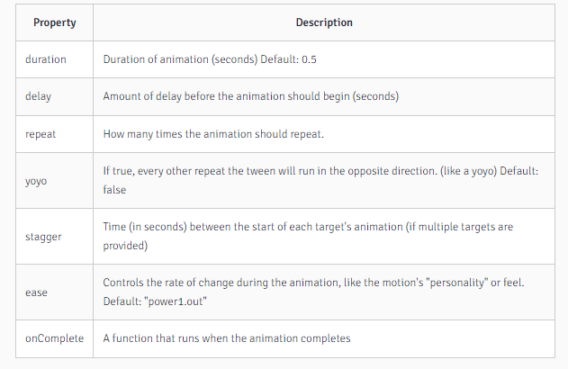

It's a framework to easily animate html items and more. Like framer but not dedicated to react
it's not open-source but for 80% of the cases you can consider it as such. You have to pay for a business license only if we charge end-users regularly like for a subscription.
npm install gsap --saveAnimates from the current state of the object to the state specified
follows the format of :
gsap.to({selector}, {animProperties})example
gsap.to(.className, {duration: 1, x: 50px})above will animate cube to move left 50px on method's call
Animates from the specified state to the current state. Like an entrance animation
follows the format of :
gsap.to({selector}, {{animOptions}: {value}, {cssProperty}: {value}})example
gsap.to(.className, {duration: 1, x: 50px})above will animate cube to move right 50px on method's call
Animates from the specified start and end state
follows the format of :
gsap.to({selector}, {startAnimProperties}, {endAnimProperties})example
gsap.to(.className, {duration: 1, x: 0px}, {duration: 1, x: 50px})above will animate cube to move left 50px on method's call

On complete: just add a fucntion called on complete
gsap.to(.className, {duration: 1, x: 50px, onComplete(){//code here} })